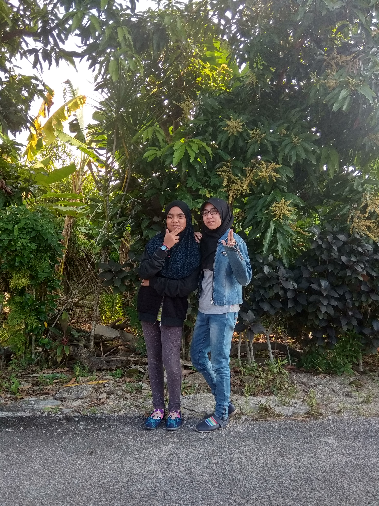
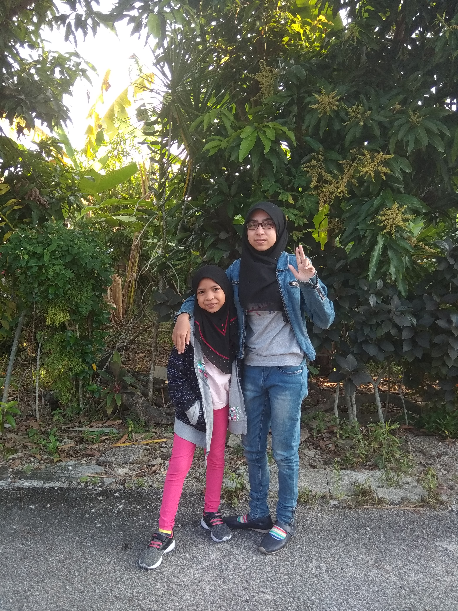
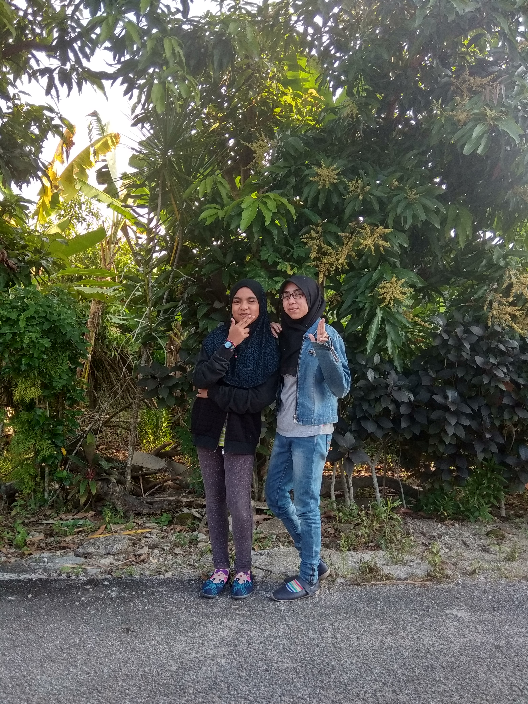
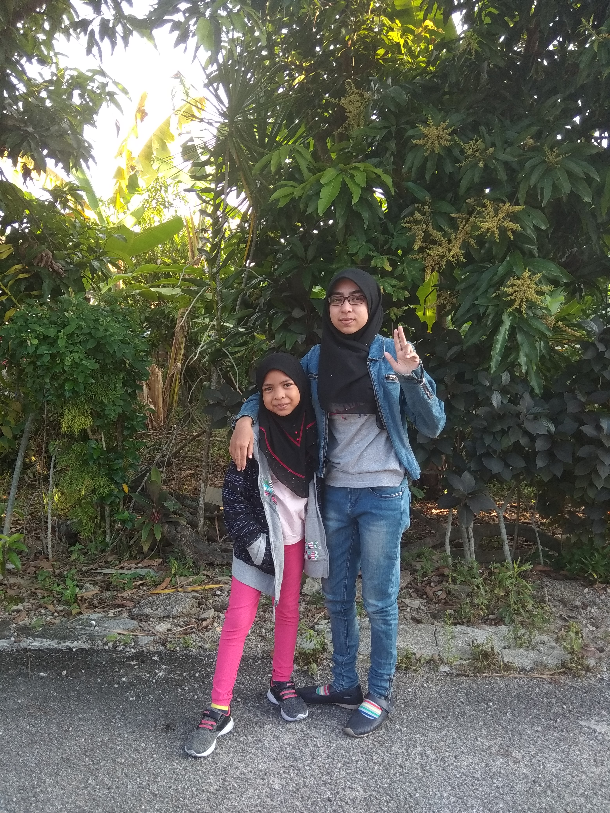

Family


MY FAMILY
So, come and know a little bit about my family members.

This is my beloved parents. My father is Wan Mohd Zaki bin Wan Abdullah and he's working at Tekun Nasional Berhad while my mother is Nooraini binti Talib. She is a teacher.

 These are my second and third siblings, both are boys. First brother is Wan Muhammad Zaim Firdaus (left) and the second one is Wan Ahmad Syahmi (right). Zaim is now studying degree under KPTM Bangi and Syahmi is now a student of KPM Johor.
 
These are my second and third siblings, both are boys. First brother is Wan Muhammad Zaim Firdaus (left) and the second one is Wan Ahmad Syahmi (right). Zaim is now studying degree under KPTM Bangi and Syahmi is now a student of KPM Johor.
   The last three siblings are all girls. They are Wan Nurdamia Qaisara (left), Wan Nurdania Qalesya (middle) and Nur Arifa Amani (right). They are 11 years old, 10 years old and 4 years old respectively.
The last three siblings are all girls. They are Wan Nurdamia Qaisara (left), Wan Nurdania Qalesya (middle) and Nur Arifa Amani (right). They are 11 years old, 10 years old and 4 years old respectively.